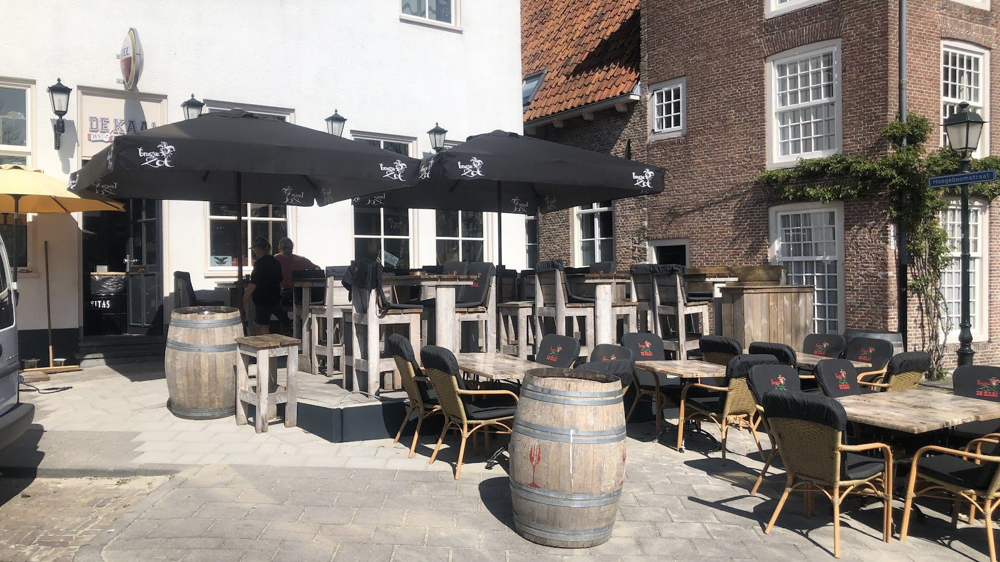
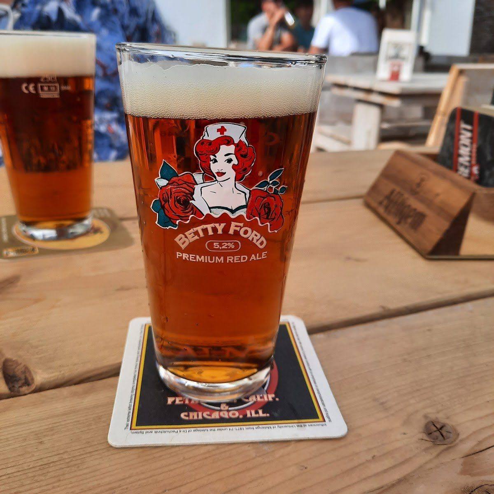
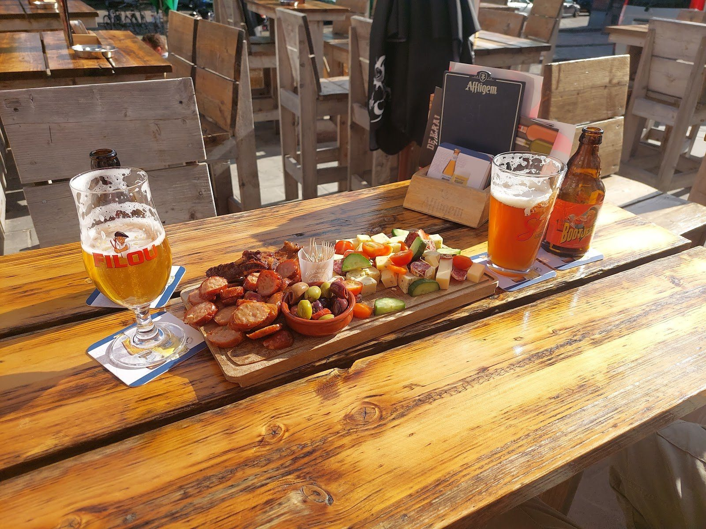
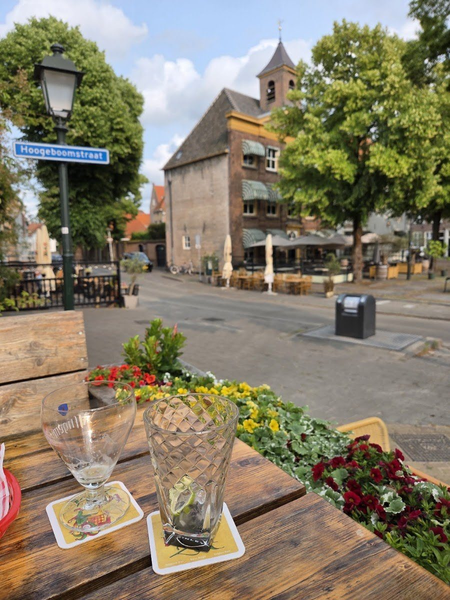
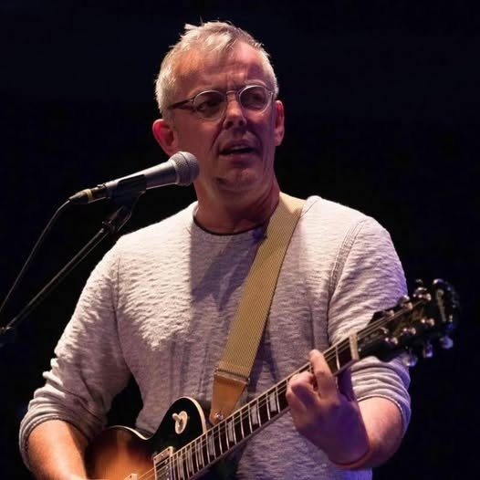
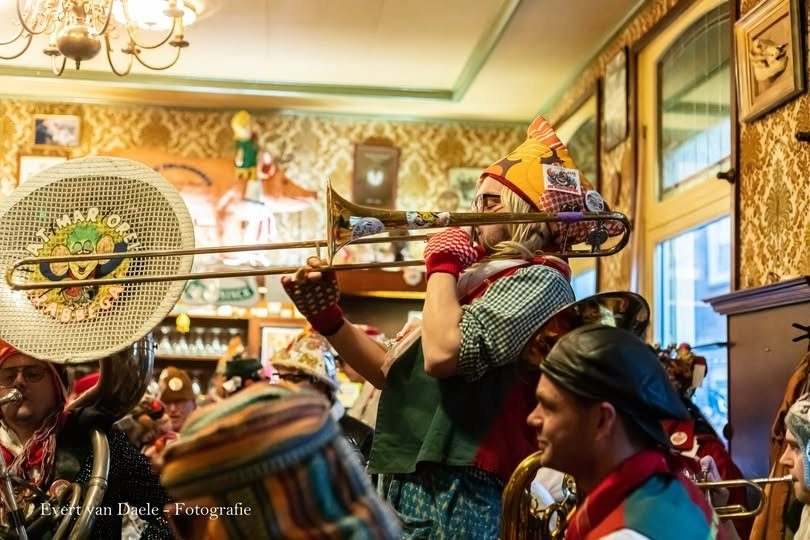
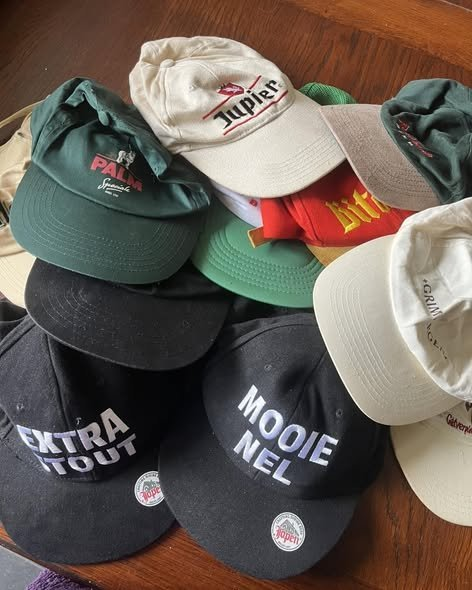

Roadhouse bar in het Havenkwartier
Speciaalbier van de tap, een borrelplank en een terras aan het plein. Op zondag in het seizoen live muziek in het café. Open vanaf 16.00 uur, in het weekend vanaf 15.00 uur.
209 reviews op Google
Een goed biertje en iets lekkers erbij
Southern comfort aan de Dubbelstraat: binnen aan de bar of buiten op het terras.

Speciaalbier van de tap
Wisselende speciaalbieren op de tap, zoals de Gouden Carolus Imperial Dark. Ook wijn en alcoholvrije drankjes.
Vraag aan de bar wat er nu op de tap staat
Borrelplank en hapjes
Een plank om te delen, bitterballen of een warme hap. Lekker bij de borrel.
Vanaf 16.00 uur
Terras aan het plein
Zit buiten met uitzicht op het plein in het Havenkwartier, in de zon of onder de parasols.
Dubbelstraat 2, Bergen op Zoom
Live muziek op zondag
In het live muziek-seizoen speelt er op zondag vanaf ongeveer 16.00 uur een artiest of band in het café. Covers, oude meezingers en een gezellige middag.
Feest in De Kaai
Met Vastenavend en op speciale dagen is het extra gezellig aan de Dubbelstraat.

Vastenavend
Met Vastenavend komen de dweilbands langs voor een feestje in het café. De Kaai hoort bij de Vrinden van dweilband Lat Mar Ore.

Petten for Pets
Een middag met spelletjes voor jong en oud en een pettenveiling, samen met JK Markiezaat. De opbrengst ging naar Jolyn's Dog Rescue.
Wat onze gasten zeggen
uit 209 reviews
"Wat een fijne plek om even te ontspannen met een drankje. De sfeer op het terras was warm en uitnodigend, perfect voor een gezellig momentje om te borrelen. (...) Het personeel is heel attent en zorgt ervoor dat je je welkom voelt."
Marion Willekens · Google"Goede sfeer en vriendelijk personeel. Aanrader voor iedereen die in bergen op zoom een drankje wil doen."
Virgil Breuer · Google"Er wordt Amerikaans barfood geserveerd,aardige bediening,leuk buitenterras,schoon sanitair."
Rob Duim · GoogleTafel reserveren of iets vragen?
Stuur ons een WhatsApp of bel even. Of loop gewoon binnen aan de Dubbelstraat 2.
Café De Kaai
Openingstijden
- Maandag
- 16.00 - 00.00
- Dinsdag
- gesloten
- Wo en do
- 16.00 - 00.00
- Vrijdag
- 16.00 - 02.00
- Zaterdag
- 15.00 - 02.00
- Zondag
- 15.00 - 22.00